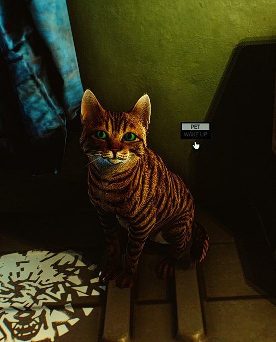
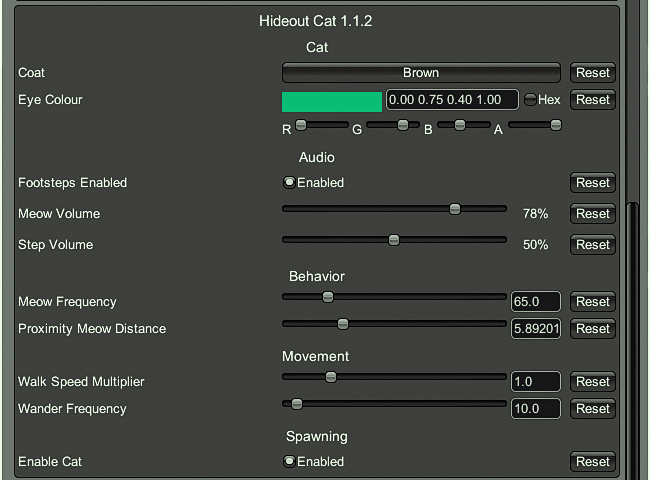

Original mod: bmpq/spt-hideoutcat by bmpq (v1.0.1, SPT 3.11)
4.1.x version: bushtail/spt-hideoutcat by bushtail (v1.1.0 → v1.1.1, SPT 4.1.x)
Port & fixes: DarkEsteves
Target: SPT 4.0.13 (EFT 0.16.9)
License: MIT (same as original)
Full port of the Hideout Cat mod to SPT 4.0.13, with a batch of fixes and a fully configurable in-game settings menu (F12). The cat lives in your hideout: wanders between areas, sits, lies down, sleeps, eats, grooms, meows at you and can be petted.
| # | Fix |
|---|---|
| 1 | API migration — rebuilt from the 4.1.x version to work with the older 4.0.13 game code (some methods changed between versions) |
| 2 | Area levels — fixed how the cat reads hideout area levels (changed from a simple number to a dictionary lookup) |
| 3 | Spawn placement — cat now spawns at a valid waypoint in an unlocked area, not stuck at the world origin |
| 4 | Cat always "busy" — fixed a bug where the cat never wandered or meowed because it thought it was always busy |
| 5 | Stuck in place — cat now properly clears its destination when it arrives, so it can pick a new area to wander to |
| 6 | Footstep audio — fixed footstep sounds dragging/looping (added one-shot playback) |
| 7 | Footstep timer — fixed footsteps firing every frame instead of at proper intervals |
| 8 | Meows cut out — meows now play on their own audio source, so they don't get cut off by player movement sounds |
| 9 | Meow/mouth sync — meow audio is now delayed slightly to match the cat's mouth opening animation |
| 10 | Cat clips through furniture — added ground-snap and landing checks so the cat walks on real surfaces and doesn't fall through objects |
| 11 | Flashlight eye reaction — removed (the 4.0.13 game code no longer supports this feature) |

HideoutCat folder into your SPT root folder (where SPT.Server.exe is located)dotnet build -c ReleaseReferences resolve against J:\Jogos\SPT-4.0.13 by default (change TarkovDir in the csproj).
Mod original: bmpq/spt-hideoutcat por bmpq (v1.0.1, SPT 3.11)
Versão 4.1.x: bushtail/spt-hideoutcat por bushtail (v1.1.0 → v1.1.1, SPT 4.1.x)
Port & correções: DarkEsteves
Alvo: SPT 4.0.13 (EFT 0.16.9)
Licença: MIT (igual ao original)
Port completo do mod Hideout Cat para o SPT 4.0.13, com várias correções e um menu de configurações no jogo (F12). O gato vive no teu hideout: passeia entre áreas, senta-se, deita-se, dorme, come, lambe-se, mia-te e aceita festinhos.
| # | Correção |
|---|---|
| 1 | Migração de API — reconstruído da versão 4.1.x para funcionar com o código mais antigo do jogo 4.0.13 (alguns métodos mudaram entre versões) |
| 2 | Níveis de área — corrigido a forma como o gato lê os níveis das áreas do hideout (mudou de um número simples para uma pesquisa em dicionário) |
| 3 | Posição de spawn — o gato agora aparece num waypoint válido de uma área desbloqueada, não preso na origem do mundo |
| 4 | Gato sempre "ocupado" — corrigido um bug onde o gato nunca passeava nem miava porque pensava que estava sempre ocupado |
| 5 | Preso no lugar — o gato agora limpa corretamente o seu destino quando chega, para poder escolher uma nova área para passear |
| 6 | Áudio dos passos — corrigido sons de passos a arrastar/em loop (adicionado playback one-shot) |
| 7 | Timer dos passos — corrigido passos a disparar todas as frames em vez de em intervalos adequados |
| 8 | Miados cortados — miados agora tocam numa fonte de áudio própria, para não serem cortados pelos sons de movimento do jogador |
| 9 | Sync boca/miado — o áudio do miado é agora ligeiramente atrasado para coincidir com a animação de abertura da boca do gato |
| 10 | Gato atravessa mobiliário — adicionado ground-snap e verificações de aterragem para o gato andar em superfícies reais e não cair através de objetos |
| 11 | Reação dos olhos à lanterna — removida (o código do jogo 4.0.13 já não suporta esta funcionalidade) |
HideoutCat na raiz do SPT (onde está o SPT.Server.exe)dotnet build -c ReleaseAs referências apontam para J:\Jogos\SPT-4.0.13 por defeito (muda TarkovDir no csproj).